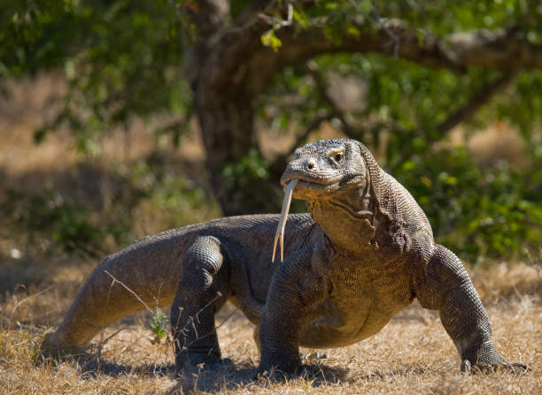

Tentang Labuan Bajo
Labuan Bajo adalah sebuah kota kecil di ujung barat Pulau Flores yang menjadi gerbang utama menuju Taman Nasional Komodo. Tempat ini menawarkan pemandangan alam yang menakjubkan dengan perpaduan antara daratan berbukit, laut biru jernih, dan pulau-pulau eksotis. Labuan Bajo telah berkembang menjadi destinasi wisata premium di Indonesia.
Highlight Wisata
- Pulau Komodo - Rumah bagi komodo, kadal terbesar di dunia
- Pulau Padar - Pulau dengan tiga pantai berwarna berbeda
- Pantai Pink - Salah satu dari tujuh pantai pink di dunia
- Gili Lawa - Spot snorkeling dan diving terbaik
- Bukit Cinta - Viewpoint dengan pemandangan 360° yang spektakuler
Informasi Penting
Waktu Terbaik Berkunjung
April-November (musim kemarau)
Akses
Bandara Komodo (Labuan Bajo) dengan penerbangan dari Bali/Jakarta
Bahasa
Bahasa Indonesia, Manggarai, Inggris terbatas
Galeri Foto
